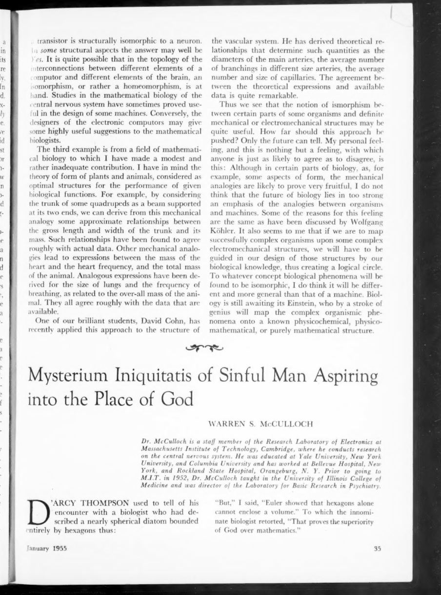
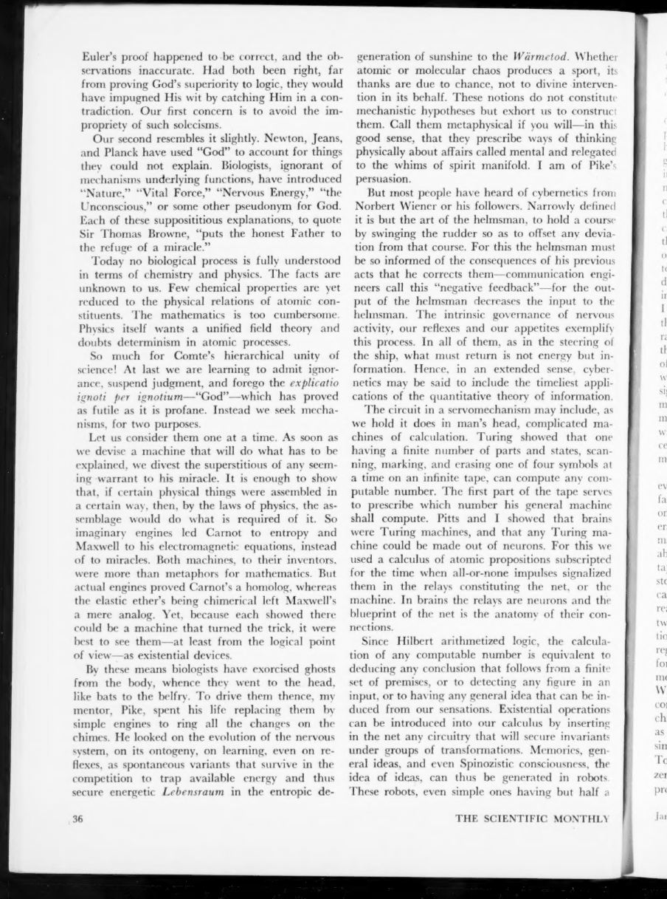
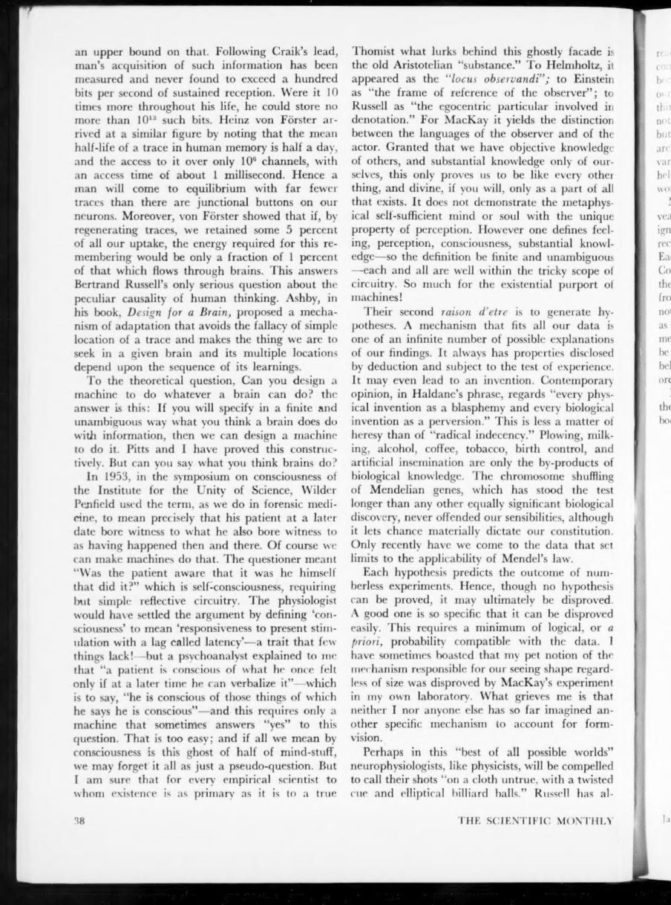
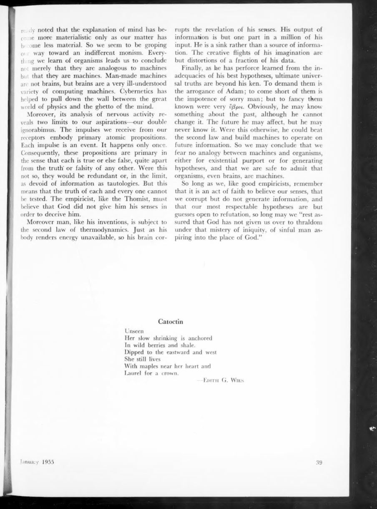

Meaningless as stated
“Organism” and “machine” are not defined well enough to answer whether the organism is a machine. Replace the question with a specified isomorphism.
The Scientific Monthly · Vol. 80 · January 1955
Are organisms machines? McCulloch refuses the question as stated, replaces it with a testable one, and then answers the testable one with a qualified yes. The essay is a lesson in how to be a mechanist without pretending to be God.
Read the plateThe thesis
McCulloch begins with a joke about a biologist who described a spherical diatom bounded entirely by hexagons. When told that Euler proved hexagons alone cannot enclose a volume, the biologist replies: “That proves the superiority of God over mathematics.” The essay is about the intellectual vice in that reply: invoking the ineffable to cover a gap in mechanism.
His target is not religion but a bad explanatory habit. “God,” “Nature,” “Vital Force,” “Nervous Energy,” “the Unconscious” — each, he says, “puts the honest Father to the refuge of a miracle.” The alternative is to build a machine that does the job, or to specify precisely which machine a specified organism is isomorphic to.
Laboratory · the isomorphism test
A heart and a pump are functionally isomorphic in a useful, local sense. A brain and a computer are functionally isomorphic in part. But functional isomorphism does not establish structural isomorphism: “neither an electronic tube nor a transistor is structurally isomorphic to a neuron.” Pair the columns, then switch the lens.
Click an organism, then its machine. The function view shows the useful correspondences; the structure view shows how little follows about the stuff.
The strong claim
The essay states the result without hedging: “Pitts and I showed that brains were Turing machines, and that any Turing machine could be made out of neurons.” The proof uses a calculus of atomic propositions subscripted for the time of all-or-none impulses. The relays are neurons; the blueprint is the anatomy of their connections.
Then the constructive challenge: “If you will specify in a finite and unambiguous way what you think a brain does do with information, then we can design a machine to do it.” The hard part is not the machine. The hard part is the specification.
The only meaningful question. A specified organism may be isomorphic to a specified machine. That does not make “the organism” identical to “the machine,” nor does it answer the old metaphysical question.
The second law of the mind. Man is subject to thermodynamics. His brain corrupts the revelation of his senses; his output is about one part in a million of his input. He is a sink, not a source.
The evolutionary argument. A universal Turing machine with a tape duplicator and an assembler can make a machine like itself. Complexity can increase; variation and survival do the rest.
The limits
“Organism” and “machine” are not defined well enough to answer whether the organism is a machine. Replace the question with a specified isomorphism.
Heart/pump, computer/brain, plant form/optimal structure: local functional correspondences are real, testable, and fruitful.
A transistor is not a neuron. Functional isomorphism does not license a claim about the stuff, the wiring, or the whole.
Machines that learn rules by playing can invent games, cooperate, and generate an ethic. Man's moral nature needs no supernatural source.
“Pitts and I showed that brains were Turing machines, and that any Turing machine could be made out of neurons.”
“If you will specify in a finite and unambiguous way what you think a brain does do with information, then we can design a machine to do it.”
“His output of information is but one part in a million of his input. He is a sink rather than a source of information.”
“To demand them is the arrogance of Adam; to come short of them is the impotence of sorry man; but to fancy them known were very impiety.”
“We are safe to admit that organisms, even brains, are machines.”
The paper itself
click to enlarge




Why it matters
This essay is the ethical companion to the technical papers. It shows how to be a mechanist without being a reductionist: specify the machine, test the isomorphism, and keep the limits in view. The brain is a machine; that is not the end of the story, because we do not know which machine it is, and because a machine can be a sink of information and still be responsible.
The final move is religious in form and secular in content: we may know something about the past, affect the future, and never know the future. To pretend otherwise is not science but the “mysterium iniquitatis” of sinful man aspiring into the place of God.